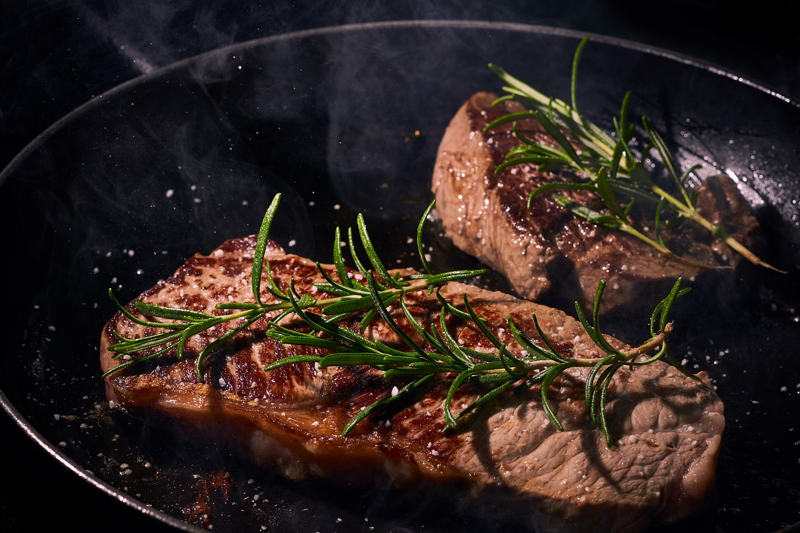

Pan-Seared Filet Mignon Recipe

This is a simple recipe about making a pan-seared filet mignon with a delecious garlic butter. Pan-searing a steak is an excelent way to add texture to the meat.
Details
- Prep Time: 10 Minutes
- Cook Time: 10 Minutes
- Serves: 4
- Amount: 10 oz of Steak per person
Ingredients
- Pan-Seared Steak
- 4 - 10 ounce steakes (approx 2 inches thick)
- Salt and peper (for taste)
- Vegtable or canola oil (can use butter if needed)
- Garlic and Herb Butter
- 1/2 stick of butter
- 1 tablespoon of fresh rosemary
- 1 tablespoon of fresh tarragon
- 1/2 tablespoon of minced garlic
for the Herb Butter

- Soften the butter in a microwave for 10 - 15 seconds
- Stir in herbs until fully mixed
- Spoon butter into stick of foil to best resemble a normal stick of butter
- Keep in the fridge for 10 minutes and remove 5 minutes before applying to steak
for the filet
- Preheat the over to 415°F and remove the steak from the fridge 30 minutes prior to cooking
- Add 1-2 tablespoons of oil to an oven-safe cast iron skillet and turn the heat up high, allowing the skillet to become very hot. Sear the steak for two minutes on both sides.
- Transfer your steak into the over. Cook for the following times per the doneness desired
- Remove the filets from the oven, plate and lightly cover with foil. Wait 5-10 minutes before serving. Steak is still cooking while resting. The resting period is important to let the steak come to a final serving temperature.
- Add a slice of garlic herb butter and serve.
| Doneness |
Cook Time |
| Rare |
4 Minutes |
| Medium - rare |
5-6 Minutes |
| Medium |
6-7 Minutes |
| Medium - well |
8-9 Minutes |
Warnings

- Pan-searing steaks at a higher temp can cause a lot of smoke. Open a kitchen window to avoid fire alarms going off.
- Ensure you are using an oven safe pan. If there is none available then use a baking sheet lined with a wire rack to cook steaks.
- Always ensure steak is at the correct temperature before enjoying. Below is a list of the desired doneness and the internal temperature for those levels.
| Doneness |
Temperature (°F) |
| Rare |
120 - 125 |
| Medium - rare |
125 - 130 |
| Medium |
135 - 140 |
| Medium - well |
145 - 150 |
| Well - done |
160 and above |
FAQ
Is there a prefered donness?
- Medium - rare tends to bring out the flavor of the steak and gives a perfect texture.
Do I have to use the garlic butter to make a good tasting steak?
- Not at all. Season to your own desire!
I only want to make 2 steaks for a date night. What do I need to change?
- Nothing having to do with the steaks. Simply modify the garlic butter ratio to make changes (for two people instead of four split the amount in half).